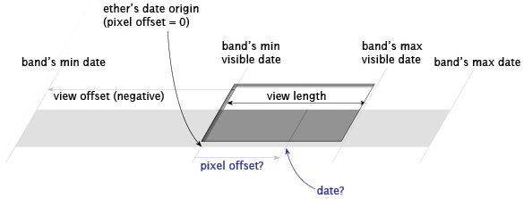

Ethers
An ether is an object made use by a band
to map between pixel coordinates and date/time.
Each band keeps a single ether. The ether keeps track of the date
corresponding to the left (or top) edge of the visible area of the
band. That date corresponds to pixel offset 0 (see below). The
ether's sole responsibility is to return a date when given a
positive or negative pixel offset, and to return a pixel offset
when given a date.

An ether's mapping, abstract, is made visible to the user by an
ether painter.
Interface
An ether must expose the following Javascript interface:
constructor
( params )
params is an object whose
fields carry initialization settings for the ether. Different
ether classes require different fields in this initialization
object. Refer to the documentation of each ether class for
details (see
Ethers in Library below).
initialize
( timeline )
timeline is the timeline
to which this ether belongs. This method is called by the
timeline itself as it is being initialized. Client code is
not supposed to call this method.
dateToPixelOffset
( date )
Map the given
date argument
(a Javascript
Date) to a pixel offset
(positive or negative, float). Note that you must round the
result (e.g., using
Math.round()) before
you can use it as a coordinate of some element, e.g.,
elmt.style.left = Math.round(ether.dateToPixelOffset(aDate)) + "px";
pixelOffsetToDate
( pixels )
Map the given pixel offset (positive or negative, float) to a
Date.
setDate
( date )
Set the date that corresponds to pixel offset 0 to the
date argument.
shiftPixels
( pixels )
Shift the origin of the ether by the given number of pixels
(positive or negative, float). A positive
pixels makes the ether
start later, a negative
pixels
makes it start earlier. This method is equivalent to:
ether.setDate(ether.pixelOffsetToDate(pixels))
There are currently 2 ether classes provided by default:
Timeline.LinearEther and
Timeline.HotZoneEther.
They all expose the interface above, but they differ in their
initialization parameters.